LinearRAG (ICLR 2026) builds a reasoning graph over your documents using
only entity recognition and embeddings — zero LLM tokens at build time. No brittle relation
extraction, just a Tri-Graph and a two-stage retrieval that does multi-hop reasoning in a single pass.
I ran the whole thing end-to-end on one 24 GB RTX 4090 — here is how it works, three real
multi-hop examples, and the honest setup story with gpt-5-mini.
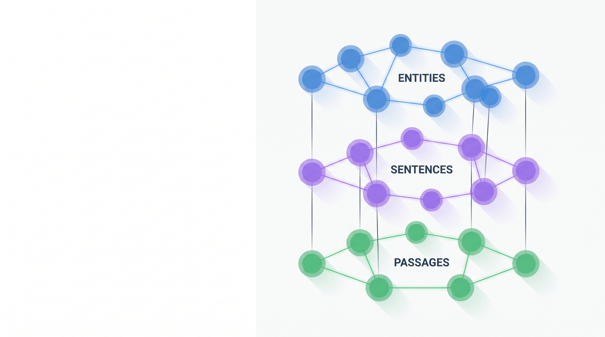
Conventional GraphRAG asks an LLM to read every passage and extract relation triples. That is expensive and noisy — extractors misread facts ("Einstein did not win the Nobel" becomes "Einstein won Nobel") and never reconcile triples across the corpus. LinearRAG's claim is blunt: explicit relation extraction is unnecessary. Shared entities are the anchors that connect passages, and the relationships are already preserved, in context, in the original text.
So LinearRAG builds a relation-free Tri-Graph — entity, sentence and passage nodes — using only spaCy NER and sentence embeddings. No LLM is called during construction, so indexing scales linearly with the corpus and costs zero tokens. Retrieval is two stages: semantic bridging spreads activation from query entities through shared sentences to multi-hop "bridge" entities, then Personalized PageRank ranks the passages.
On a 24 GB 4090 it runs comfortably: GPU sentence embeddings, an optional --use_vectorized_retrieval
sparse-matrix path, and an answer model of your choice. Swapping the reader from gpt-4o-mini to
gpt-5-mini took my 12-question demo from 0.67 → 1.00 LLM-judge accuracy on the same
retrieved passages. The one real cost is a one-time CPU spaCy NER pass at index time — cached afterward.
Retrieval-augmented generation grounds a language model in your own documents so it hallucinates less. That is easy when the answer sits in one passage. It gets hard on multi-hop questions — "when did the performer of this song's mother die?" — where the evidence is scattered across several documents and no single chunk holds the answer.
GraphRAG tackles this by building a knowledge graph: entities become nodes, and the relationships between them become edges, so retrieval can walk multiple hops. The standard recipe builds those edges by having an LLM read each passage and emit structured relation triples. LinearRAG keeps the graph idea but throws away the relation extraction — and with it, the cost and the noise.
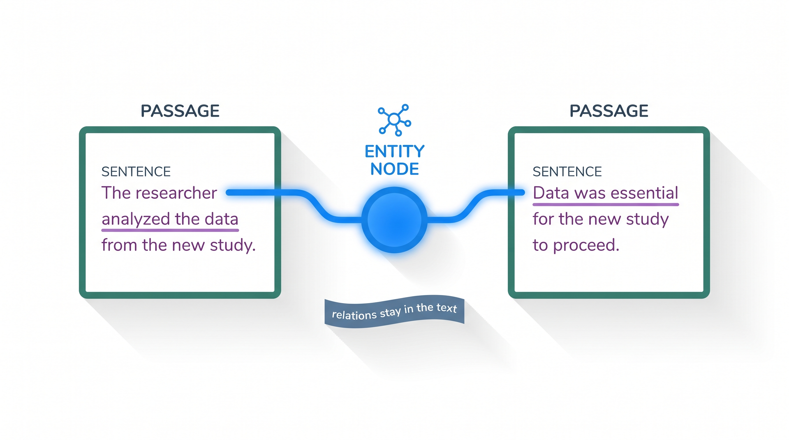
The LinearRAG paper opens with an uncomfortable finding: on many real tasks, GraphRAG systems underperform plain vanilla RAG. The culprit is the automatically-constructed graph, which fails in two distinct ways.
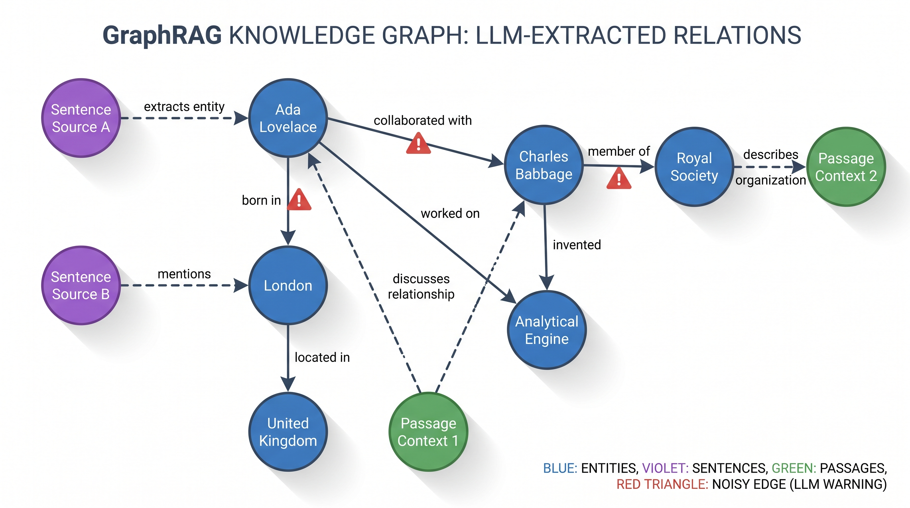
Local inaccuracy. Relation extraction routinely misreads the text. Negations get dropped, compositional clauses get flattened into a single atomic triple, and the meaning inverts. Every wrong triple is a wrong edge that quietly distorts retrieval.
Global inconsistency. Triples are extracted from each passage in isolation, with no mechanism to reconcile them corpus-wide. The same entity ends up linked inconsistently across documents, and redundant or contradictory edges accumulate. Bottom-up community clustering on top of a noisy graph only propagates the errors upward.
LinearRAG constructs a three-layer graph it calls the Tri-Graph. There are three kinds of nodes — entity, sentence and passage — and just two relations between them: a contain edge when a passage holds an entity, and a mention edge when a sentence mentions one. The diagram below lays out all three layers at once.
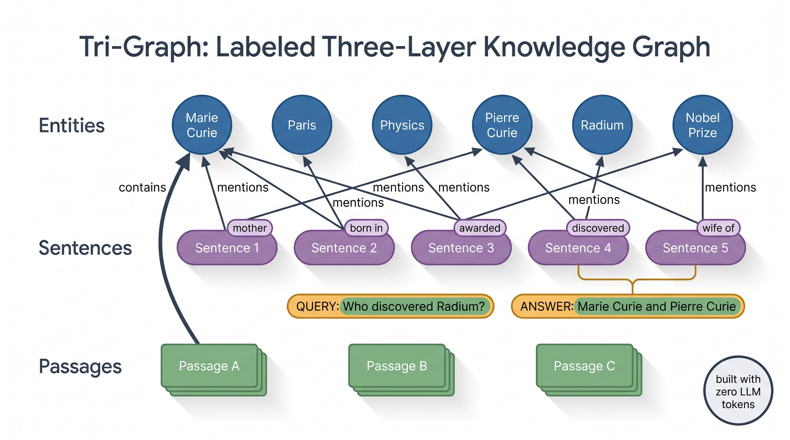
Construction uses only two cheap, deterministic tools: spaCy NER to pull entities out of every passage and sentence, and a sentence-transformer to embed the text. No language model is involved, so there is no token cost and the work is linear in the corpus size. The embeddings are cached to parquet, so re-indexing only touches new documents.
# Construction = spaCy NER + sentence embeddings. No LLM, no relation triples.
ner = SpacyNER("en_core_web_trf")
passage_entities, sentence_entities = ner.batch_ner(passages, max_workers)
# contain edges: passage -> entity (weighted by normalized mention count)
for passage, entities in passage_entities.items():
for ent in entities:
graph.add_edge(passage, ent, weight=count(ent) / total)
# mention edges: sentence <-> entity (these drive multi-hop bridging)
for sentence, entities in sentence_entities.items():
for ent in entities:
entity_to_sentence[ent].add(sentence)With the graph built, answering a question is two stages. The first is the clever part — relevant entity activation via semantic bridging — and it is how LinearRAG does multi-hop reasoning without any explicit relation edges.
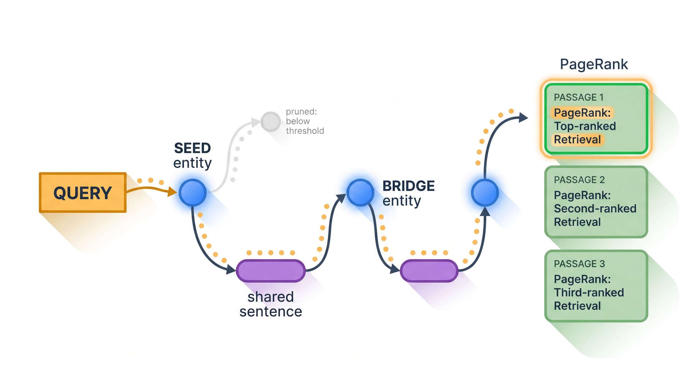
The query's entities are matched to seed entity nodes. Activation then spreads hop by hop: a lit entity activates the sentences that mention it; the sentence most relevant to the query (by embedding similarity) lights up; and the other entities in that sentence become newly-activated bridge entities. A threshold prunes weak paths, and after a few iterations you have a small, query-focused set of entities — the multi-hop chain — without ever consulting a relation edge.
Stage two is global importance aggregation via Personalized PageRank. The activated entities seed a PPR run over the passage–entity subgraph, with a hybrid initialization that blends each passage's direct similarity to the query with the evidence accumulated from its entities. The top-ranked passages go to the LLM, which reads them and writes the answer.
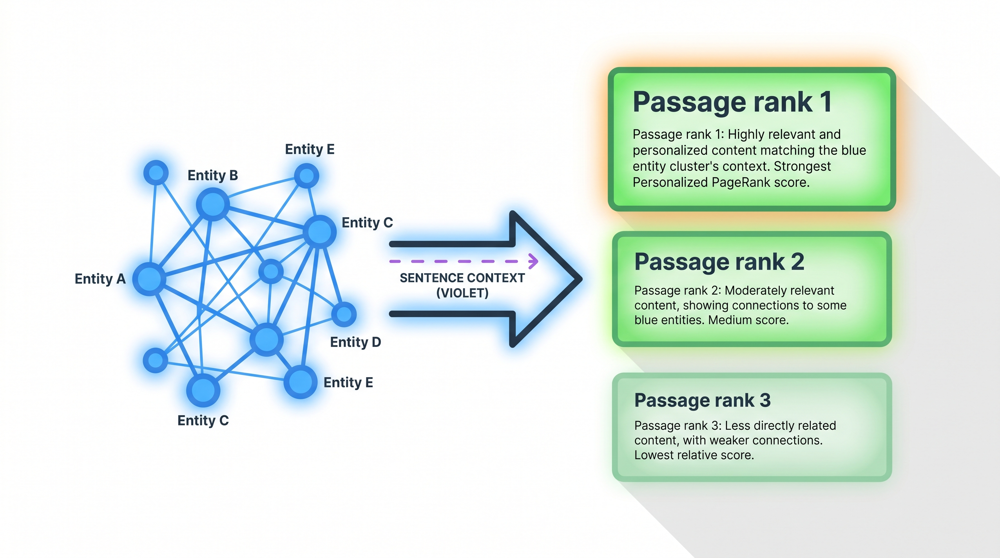
The best way to feel the mechanism is to trace it on real questions. These three are from the 2WikiMultiHop set I indexed (658 passages), and each has a different graph shape.
Q: "When did Lothair II's mother die?"
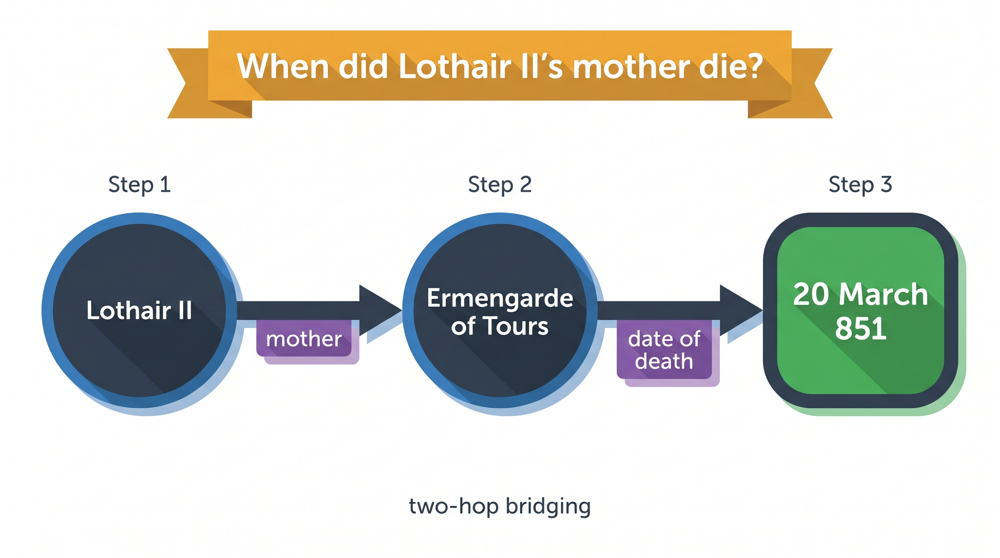
Q: "Which film was released first, Aas Ka Panchhi or Phoolwari?"
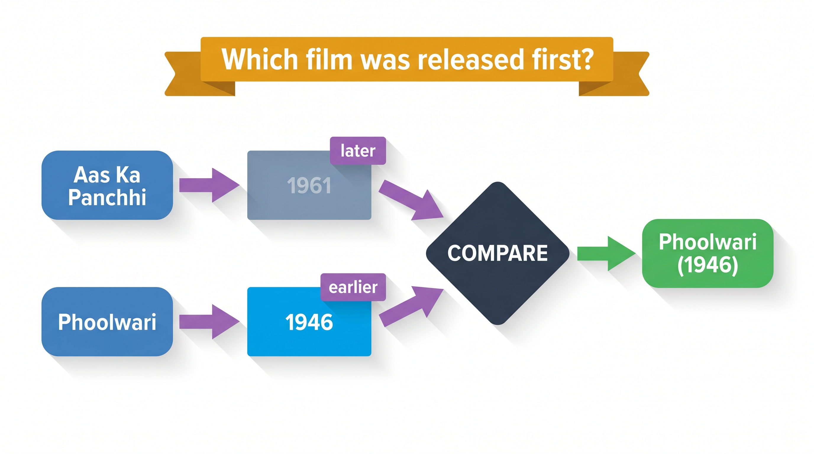
A comparison question lights up two seeds at once. One chain bridges to 1961, the other
to 1946; both feed a compare step, and the earlier date wins. Notice the graph shape is
different from example ① — two parallel chains converging, rather than one linear bridge.
Q: "What is the place of birth of the performer of the song 'Changed It'?"
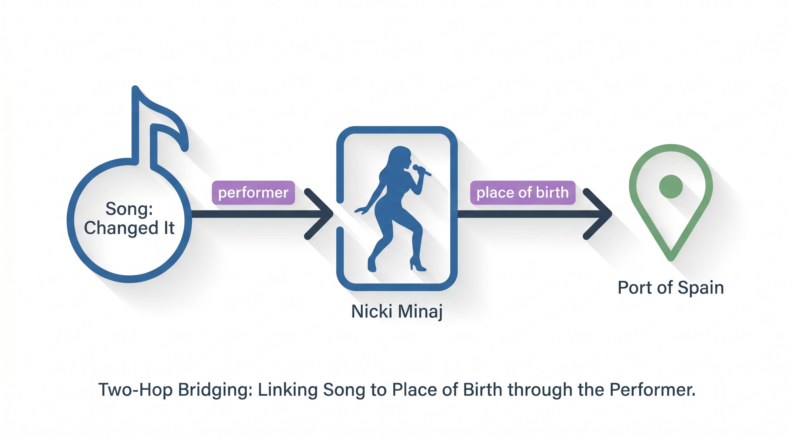
Same compositional pattern as ①, different domain: seed the song, bridge through the performer relation to
Nicki Minaj, then through place of birth to the answer. Three questions, three traversal shapes,
one mechanism — and not a single hand-built relation.
LinearRAG prefers Python 3.9 (its pins are old). Install a CUDA build of PyTorch first so the embeddings and the vectorized retrieval land on the GPU, then the repo's requirements and the spaCy transformer model.
# Python 3.9 venv (uv). GPU torch FIRST, then the repo pins.
uv venv .venv --python 3.9.19 && source .venv/bin/activate
uv pip install torch==2.5.1 --index-url https://download.pytorch.org/whl/cu124
uv pip install -r requirements.txt
uv pip install \
'https://github.com/explosion/spacy-models/releases/download/en_core_web_trf-3.6.1/en_core_web_trf-3.6.1-py3-none-any.whl'Datasets come from the project's HuggingFace repo. I used 2WikiMultiHop (standard spaCy model, 658 passages); the four bundled sets span compositional, comparison and multi-hop reasoning.
One full command indexes, retrieves, answers and evaluates. The first run pays the one-time spaCy NER pass
(CPU, then cached to import/); every run after that reuses the cache and retrieves in seconds.
python run.py \
--spacy_model en_core_web_trf \
--embedding_model sentence-transformers/all-mpnet-base-v2 \
--dataset_name 2wikimultihop \
--llm_model gpt-5-mini \
--max_workers 16 \
--use_vectorized_retrieval # GPU sparse-matrix retrievalTo make it tangible I wired up a small Gradio demo over the cached index: type any question and it returns the answer alongside the PPR-ranked evidence passages and their scores.
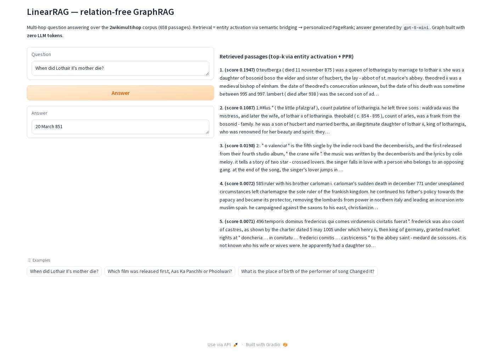
Vectorized GPU retrieval. The semantic-bridging step ships twice: a readable CPU
breadth-first-search reference, and a vectorized version that expresses the same propagation as sparse
matrix multiplications on CUDA. The --use_vectorized_retrieval flag switches between them; on the
4090, with the index cached, 12 queries retrieved in about 1.5 seconds.
The reader model matters as much as retrieval. On the same retrieved passages, swapping the
answer model lifted accuracy sharply. (GPT-5-family models need max_completion_tokens instead of
max_tokens and reject temperature=0 — a one-line client patch.)
| Reader model | LLM-judge accuracy | Contain accuracy |
|---|---|---|
| gpt-4o-mini | 0.667 (8/12) | 0.833 (10/12) |
| gpt-5-mini | 1.000 (12/12) | 0.917 (11/12) |
Attribute-query fallback. Pure entity bridging can miss simple attribute lookups (where was X born?). An opt-in hybrid mode boosts passages that share attribute keywords with the query — off by default, enabled through the config object.
config = LinearRAGConfig(
dataset_name="2wikimultihop",
enable_hybrid_attribute_fallback=True, # default: False
attribute_keyword_boost=0.25, # born / died / located / founded ...
)
Evaluation. After answering, LinearRAG scores predictions two ways in parallel — an LLM judge
(correct / incorrect against the gold answer) and a strict substring contain check — writing
everything to a timestamped results/ folder. The knobs worth sweeping first on a new dataset are
iteration_threshold, max_iterations, passage_ratio and
top_k_sentence.
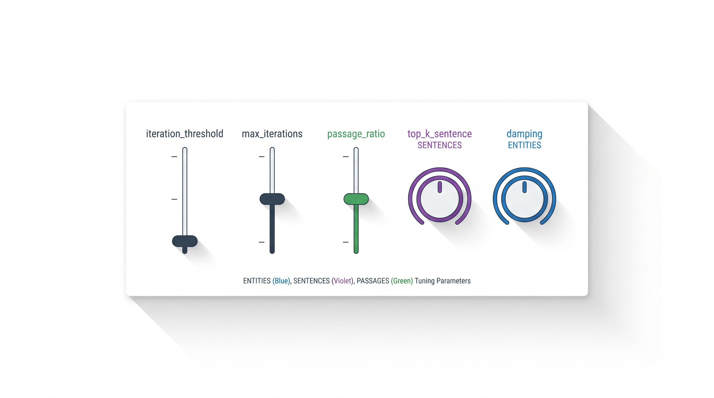
LinearRAG is the rare paper whose central move is to remove something — relation extraction — and come out ahead on cost, speed and quality. The Tri-Graph is genuinely cheap to build, the semantic-bridging idea is an elegant way to get single-pass multi-hop reasoning out of a relation-free graph, and on a 24 GB 4090 the whole pipeline is comfortable, with the GPU doing the embeddings and the sparse-matrix retrieval.
The one honest caveat: spaCy's transformer NER runs on CPU by the repo's design and is the indexing bottleneck
— about six minutes for 658 passages on my machine. It is a one-time cost (the result caches to
import/), but on a large corpus it is the thing to plan around. Everything that matters at query
time — embeddings, bridging, PageRank — is fast and GPU-friendly. For multi-hop RAG on a single workstation
GPU, this is one of the most pragmatic designs I've run.
DEEP-PolyU/LinearRAG — reference implementation, datasets and run scripts.en_core_web_trf for NER, sentence-transformers all-mpnet-base-v2 for embeddings, python-igraph for Personalized PageRank.
What happened
No single passage states the answer. LinearRAG seeds
Lothair II, bridges through a shared sentence to his motherErmengarde of Tours, then bridges again to her date of death. Genuine two-hop reasoning, in one retrieval pass, with no relation edges.